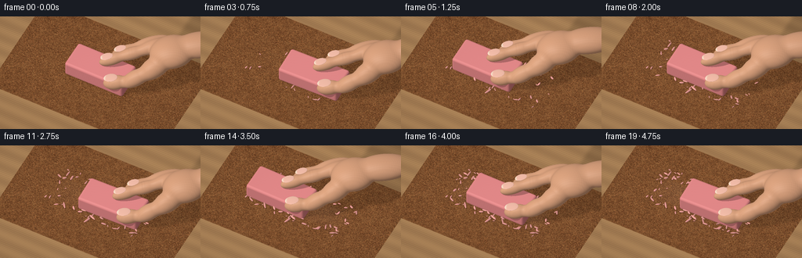
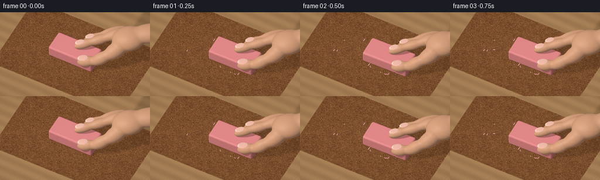

CODING AGENTS AS PIXEL WORLD MODELS
traex/GPT-6.1-Sol · material_0016
点击播放 · 原生 RGB 像素
逐轮保存的候选
回放视频、检查图与代码变化。
每份候选均可单独播放。实际图片检查记录在下方工具轨迹中。
候选 01播放与检查图
点击播放 · 原生 RGB 像素


展开代码变化
--- 上一保存版本
+++ 本次保存版本
@@ -0,0 +1,373 @@
+"""Text-only, deterministic miniature ray renderer: erasing against sandpaper.
+Uses only numpy/Pillow and analytic geometry; no external assets or renderer.
+"""
+import json
+from pathlib import Path
+import numpy as np
+from PIL import Image, ImageDraw, ImageFilter
+from scipy.ndimage import gaussian_filter, map_coordinates
+import artifact_io
+
+ROOT = Path(__file__).resolve().parent
+SPEC = json.loads((ROOT / 'task_spec.json').read_text())
+W, H = SPEC['width'], SPEC['height']
+S = 3
+RW, RH = W*S, H*S
+rng = np.random.default_rng(92184)
+
+def unit(x):
+ x=np.asarray(x,dtype=np.float32)
+ return x/np.maximum(np.linalg.norm(x,axis=-1,keepdims=True),1e-9)
+
+def srgb(x):
+ x=np.asarray(x,dtype=np.float32)/255
+ return np.where(x<.04045,x/12.92,((x+.055)/1.055)**2.4)
+
+def noise(p, scale=1):
+ p=np.asarray(p)*scale
+ return (np.sin(p[...,0]*7.12+p[...,1]*11.51+p[...,2]*4.16)*np.sin(p[...,0]*17.31-p[...,1]*8.81+p[...,2]*13.63))
+
+# The stationary camera looks obliquely down, like a macro tabletop shot.
+cam=np.array([2.6,-5.0,7.2],np.float32)
+target=np.array([0,0,.20],np.float32)
+fwd=unit(target-cam)
+right=unit(np.cross(fwd,[0,0,1]))
+up=unit(np.cross(right,fwd))
+xx,yy=np.meshgrid((np.arange(RW)+.5)/RW-.5,.5-(np.arange(RH)+.5)/RH)
+orig=(cam+xx[...,None]*8.0*right+yy[...,None]*(8*H/W)*up).reshape(-1,3).astype(np.float32)
+dir=np.broadcast_to(fwd,orig.shape)
+LIGHT=unit(np.array([-3.5,-4.5,8.0]))
+
+# A physically fixed abrasive grain texture, not temporally regenerated noise.
+TW,TH=1800,1400
+r=rng.normal(size=(TH,TW)).astype(np.float32)
+a=gaussian_filter(r,1.7); a/=a.std()
+b=gaussian_filter(r,4.2); b/=b.std()
+c=gaussian_filter(r,28); c/=c.std()
+height=np.clip(.57*a+.20*b+.12*c,-2,2)
+gy,gx=np.gradient(height)
+base=np.empty((TH,TW,3),np.float32)
+base[:]=[127,83,48]
+base+=height[...,None]*np.array([18,15,10])
+base+=((gx-gy)*19)[...,None]
+base+=r[...,None]*3
+tex=Image.fromarray(np.uint8(np.clip(base,0,255)))
+draw=ImageDraw.Draw(tex)
+# A coarse garnet paper: tiny angular sand particles with bright facets.
+for j in range(53000):
+ x=int(rng.integers(TW)); y=int(rng.integers(TH)); rad=float(rng.uniform(1.0,4.2))
+ tone=int(rng.uniform(64,157))
+ col=(tone+16,int(tone*.68),int(tone*.39))
+ draw.polygon([(x-rad,y),(x-rad*.2,y-rad*.75),(x+rad*.85,y-rad*.35),(x+rad*.7,y+rad*.8),(x-rad*.35,y+rad)],fill=col)
+ if rad>2.3:
+ draw.line([(x-rad,y),(x-rad*.2,y-rad*.75),(x+rad*.65,y-rad*.35)],fill=(min(tone+52,205),min(int(tone*.8+29),164),min(int(tone*.48+16),108)),width=1)
+SAND=np.asarray(tex,dtype=np.float32)
+
+# The brown sheet is slightly thick, with its natural edge visible against wood.
+SX0,SX1,SY0,SY1=-3.7,3.9,-2.5,2.35
+
+def sample_sand(p):
+ tx=np.clip((p[:,0]-SX0)/(SX1-SX0)*(TW-1),0,TW-1)
+ ty=np.clip((p[:,1]-SY0)/(SY1-SY0)*(TH-1),0,TH-1)
+ coords=np.array([ty,tx])
+ out=np.stack([map_coordinates(SAND[:,:,k],coords,order=1,mode='nearest') for k in range(3)],axis=1)
+ return srgb(out)
+
+def sd_box(p):
+ # Generously rounded corners are characteristic of a used rubber eraser.
+ q=np.abs(p)-np.array([1.20,.51,.245],np.float32)
+ return np.linalg.norm(np.maximum(q,0),axis=1)+np.minimum(np.max(q,axis=1),0)-.105
+
+def frame_eraser_sdf(p,shift,angle):
+ q=p-np.array([shift[0],shift[1],.355])
+ co,si=np.cos(angle),np.sin(angle)
+ q=np.column_stack((co*q[:,0]+si*q[:,1],-si*q[:,0]+co*q[:,1],q[:,2]))
+ return sd_box(q)
+
+def box_local(p,shift,angle):
+ q=p-np.array([shift[0],shift[1],.355])
+ co,si=np.cos(angle),np.sin(angle)
+ return np.column_stack((co*q[:,0]+si*q[:,1],-si*q[:,0]+co*q[:,1],q[:,2]))
+
+# Articulated finger volumes. Smooth unions avoid the "stack of spheres" look.
+def ellipsoid(center,longaxis,length,width,depth):
+ a=unit(longaxis)
+ b=unit(np.cross([0,0,1],a))
+ c=unit(np.cross(a,b))
+ return np.array(center,np.float32),np.stack([a,b,c],axis=1),np.array([length,width,depth],np.float32)
+
+HAND=[
+ ellipsoid([.41,.27,1.00],[1,.70,.38],.56,.235,.245),
+ ellipsoid([1.07,.74,1.22],[1,.73,.32],.62,.25,.255),
+ ellipsoid([1.77,1.27,1.47],[1,.80,.30],.70,.29,.29),
+ ellipsoid([.94,-.49,.65],[1,.40,.30],.51,.285,.295),
+ ellipsoid([1.66,-.13,.94],[1,.85,.65],.64,.32,.33),
+ ellipsoid([2.22,.48,1.29],[.7,1,.45],.74,.42,.42),
+ ellipsoid([2.59,1.22,1.65],[1,.75,.13],.91,.75,.54),
+ ellipsoid([3.58,1.93,1.89],[1,.57,.10],1.18,.58,.47),
+ # A sliver of the middle finger is visible behind the gripping index.
+ ellipsoid([.72,.86,1.03],[1,.73,.33],.60,.245,.245),
+ ellipsoid([1.53,1.45,1.32],[1,.75,.28],.82,.28,.29),
+]
+
+def sd_ell(p,el):
+ center,basis,radii=el
+ q=(p-center)@basis
+ k0=np.linalg.norm(q/radii,axis=1)
+ k1=np.linalg.norm(q/(radii*radii),axis=1)
+ return k0*(k0-1)/np.maximum(k1,1e-6)
+
+def hand_sdf(p,shift):
+ q=p-np.array([shift[0],shift[1],0],np.float32)
+ d=sd_ell(q,HAND[0])
+ for el in HAND[1:]:
+ e=sd_ell(q,el)
+ h=np.maximum(.115-np.abs(d-e),0)/.115
+ d=np.minimum(d,e)-h*h*.115*.25
+ return d
+
+# Fingernails are thin, softly translucent, on the dorsal surfaces of the tips.
+NAILS=[
+ ellipsoid([.215,.12,1.213],[1,.70,.27],.255,.169,.025),
+ ellipsoid([.75,-.57,.923],[1,.40,.23],.28,.205,.028),
+ ellipsoid([.51,.71,1.245],[1,.70,.3],.245,.155,.022),
+]
+
+def aabb(o,d,low,high):
+ t1=(np.asarray(low)-o)/d; t2=(np.asarray(high)-o)/d
+ near=np.maximum(np.max(np.minimum(t1,t2),axis=1),0)
+ far=np.min(np.maximum(t1,t2),axis=1)
+ return near,far
+
+def march(o,d,sdf,lo,hi,max_iter=64):
+ near,far=aabb(o,d,lo,hi)
+ indices=np.flatnonzero(far>=near)
+ t=near[indices].copy()
+ hit_t=np.full(len(o),np.inf,np.float32)
+ for _ in range(max_iter):
+ if not len(indices): break
+ p=o[indices]+d[indices]*t[:,None]
+ dist=sdf(p)
+ hits=dist<.0012
+ hit_t[indices[hits]]=t[hits]
+ t+=np.maximum(dist*.86,.0005)
+ active=(~hits)&(t<far[indices])
+ indices=indices[active]; t=t[active]
+ return hit_t
+
+def normals(p,sdf):
+ e=.002
+ grads=[]
+ for k in range(3):
+ off=np.zeros(3,np.float32);off[k]=e
+ grads.append(sdf(p+off)-sdf(p-off))
+ return unit(np.stack(grads,axis=1))
+
+def intersect_ellipsoid(o,d,el):
+ center,basis,radii=el
+ ro=((o-center)@basis)/radii
+ rd=(d@basis)/radii
+ A=np.sum(rd*rd,axis=1); B=np.sum(ro*rd,axis=1); C=np.sum(ro*ro,axis=1)-1
+ delta=B*B-A*C
+ t=(-B-np.sqrt(np.maximum(delta,0)))/A
+ return np.where((delta>=0)&(t>0),t,np.inf)
+
+def ell_normal(p,el):
+ c,b,r=el
+ return unit((((p-c)@b)/(r*r))@b.T)
+
+# Surface shadow map, including a narrow contact shadow and a wide, softer penumbra.
+SMW,SMH=1000,800
+
+def uv(points):
+ return [((p[0]-SX0)/(SX1-SX0)*SMW,(p[1]-SY0)/(SY1-SY0)*SMH) for p in points]
+
+def shadow_map(shift,angle):
+ mask=Image.new('L',(SMW,SMH),0); d=ImageDraw.Draw(mask)
+ co,si=np.cos(angle),np.sin(angle)
+ corners=np.array([[-1.3,-.60],[1.3,-.60],[1.3,.60],[-1.3,.60]])
+ for z,alpha in [(.66,125),(.28,185),(.02,240)]:
+ ps=np.column_stack((co*corners[:,0]-si*corners[:,1]+shift[0],si*corners[:,0]+co*corners[:,1]+shift[1]))
+ ps-=z*LIGHT[:2]/LIGHT[2]
+ d.polygon(uv(ps),fill=alpha)
+ for el in HAND:
+ c,b,r=el
+ points=[]
+ for a in np.linspace(0,2*np.pi,45):
+ point=c+b[:,0]*r[0]*np.cos(a)+b[:,1]*r[1]*np.sin(a)
+ points.append(point[:2]+shift-point[2]*LIGHT[:2]/LIGHT[2])
+ d.polygon(uv(points),fill=120)
+ soft=np.asarray(mask.filter(ImageFilter.GaussianBlur(8)),np.float32)/255
+ contact=Image.new('L',(SMW,SMH),0);d=ImageDraw.Draw(contact)
+ ps=np.column_stack((co*corners[:,0]-si*corners[:,1]+shift[0],si*corners[:,0]+co*corners[:,1]+shift[1]))
+ d.polygon(uv(ps),fill=180)
+ soft=np.maximum(soft,np.asarray(contact.filter(ImageFilter.GaussianBlur(2.3)),np.float32)/255)
+ return soft
+
+# Small pink worn-off rubber fragments, left behind as rubbing progresses.
+crumbs=[]
+for i in range(102):
+ born=int(rng.integers(1,20))
+ ph=2*np.pi*(born-1)/8
+ stroke=.83*np.sin(ph)
+ x=stroke+rng.uniform(-1.38,1.38)
+ y=rng.choice([-1,1])*rng.uniform(.50,.95)+rng.normal(0,.055)
+ if i%4==0:
+ x=rng.choice([-1,1])*rng.uniform(1.5,2.15);y=rng.uniform(-.74,.65)
+ size=rng.uniform(.024,.064)
+ length=size*rng.uniform(1.2,2.6)
+ z=.075+size*.55
+ el=ellipsoid([x,y,z],[np.cos(i*2.7),np.sin(i*2.7),.06],length,size*.65,size*.60)
+ crumbs.append((born,el,float(rng.uniform(.80,1.10))))
+
+# Base plane intersections and stationary texture are cached once.
+table_t=(0-orig[:,2])/dir[:,2]
+table_p=orig+dir*table_t[:,None]
+sand_t=(.075-orig[:,2])/dir[:,2]
+sand_p=orig+dir*sand_t[:,None]
+inside=(sand_p[:,0]>=SX0)&(sand_p[:,0]<=SX1)&(sand_p[:,1]>=SY0)&(sand_p[:,1]<=SY1)
+base_t=np.where(inside,sand_t,table_t)
+base_p=orig+dir*base_t[:,None]
+wood_p=table_p
+# Fine longitudinal fibers and a few subdued darker growth rings.
+wx,wy=wood_p[:,0],wood_p[:,1]
+grain=np.sin(wy*79+np.sin(wx*.61)*2.4+np.sin(wy*8)*1.1)
+wide=np.sin(wy*9.3+np.sin(wx*.28))
+woodcol=np.stack((172+grain*6+wide*7,131+grain*5+wide*6,88+grain*3+wide*4),axis=1)
+woodcol+=noise(wood_p,32)[:,None]*3
+base_col=srgb(np.clip(woodcol,0,255))
+base_col[inside]=sample_sand(sand_p[inside])
+base_normal=np.broadcast_to(np.array([0,0,1],np.float32),base_p.shape).copy()
+plane_rgb=base_col*(.32+.78*LIGHT[2])
+
+# Lighting in linear RGB with soft cool fill and restrained highlights.
+def shade(p,n,albedo,rough=.6,shadow=None):
+ nl=np.maximum(np.sum(n*LIGHT,axis=1),0)
+ if shadow is None:shadow=np.ones(len(p),np.float32)
+ fill=.27+.11*np.maximum(n[:,2],0)+.05*np.maximum(-n[:,1],0)
+ out=albedo*(fill[:,None]+.76*nl[:,None]*shadow[:,None])
+ halfv=unit(LIGHT-fwd)
+ nh=np.maximum(n@halfv,0)
+ power=12+120*(1-rough)**2
+ spec=(nh**power)*(.018+.08*(1-rough))*shadow
+ out+=spec[:,None]*np.array([1,.95,.89])
+ return out
+
+
+def render(index):
+ phase=2*np.pi*index/8
+ shift=np.array([.83*np.sin(phase),.05*np.sin(phase+.3)],np.float32)
+ angle=.022*np.sin(phase-.4)
+ eraser=lambda p:frame_eraser_sdf(p,shift,angle)
+ hand=lambda p:hand_sdf(p,shift)
+ # Soft stable illumination, with natural occlusion on the abrasive sheet.
+ sm=shadow_map(shift,angle)
+ su=np.clip((base_p[:,0]-SX0)/(SX1-SX0)*(SMW-1),0,SMW-1)
+ sv=np.clip((base_p[:,1]-SY0)/(SY1-SY0)*(SMH-1),0,SMH-1)
+ sh=map_coordinates(sm,[sv,su],order=1,mode='nearest')
+ color=plane_rgb*(1-.60*sh[:,None])
+ depth=base_t.copy()
+ # Pale rubbed strip: only slightly lighter than the rest of the sandpaper.
+ wear=np.exp(-((base_p[:,1]+.06)/.56)**8)*np.exp(-(base_p[:,0]/1.9)**8)
+ wear*=inside*(index/19)*.035
+ color+=wear[:,None]*np.array([.58,.35,.26])
+ # Rubber debris casts tiny contact shadows before it is rendered in 3-D.
+ for born,el,tint in crumbs:
+ if born>index:continue
+ c,b,r=el
+ q=base_p[:,:2]-c[:2]
+ dd=(q@b[:2,:2])/r[:2]
+ oc=np.exp(-np.sum(dd*dd,axis=1)*.7)*.28
+ color*=1-oc[:,None]
+ t=march(orig,dir,eraser,[shift[0]-1.36,shift[1]-.66,0],[shift[0]+1.36,shift[1]+.66,.72],52)
+ ids=np.flatnonzero(t<depth)
+ p=orig[ids]+dir[ids]*t[ids,None]
+ n=normals(p,eraser)
+ q=box_local(p,shift,angle)
+ # Matte dyed rubber with subtle pores, slight polishing, and dirty worn edges.
+ v=noise(q,11)*.012+noise(q,38)*.008
+ rubber=srgb(np.array([225,135,135]))[None,:]*(1+v[:,None])
+ edge=np.clip((.16-(q[:,2]+.355))/.15,0,1)
+ soil=(.23+.16*(noise(q,22)+1)*.5)*edge
+ rubber*=1-soil[:,None]
+ # A few very shallow diagonal abrasion streaks near the contact edge.
+ scuff=(np.sin(q[:,0]*73+q[:,2]*16)>.90)*edge
+ rubber+=scuff[:,None]*.025
+ # Hand occlusion over the rubber top, from exact ellipsoid shadow rays.
+ vis=np.ones(len(p),np.float32)
+ shadow_o=p+n*.007
+ for el in HAND:
+ shifted=(el[0]+[shift[0],shift[1],0],el[1],el[2])
+ tt=intersect_ellipsoid(shadow_o,np.broadcast_to(LIGHT,p.shape),shifted)
+ vis[np.isfinite(tt)]=.28
+ color[ids]=shade(p,n,rubber,.83,vis)
+ depth[ids]=t[ids]
+ # Smooth skin, with subtle capillary variation and gentle fingertip creases.
+ t=march(orig,dir,hand,[shift[0]-.30,shift[1]-.89,.28],[shift[0]+4.85,shift[1]+2.94,2.51],72)
+ ids=np.flatnonzero(t<depth)
+ p=orig[ids]+dir[ids]*t[ids,None]
+ n=normals(p,hand)
+ q=p-np.array([shift[0],shift[1],0])
+ skin=srgb(np.array([213,158,123]))[None,:]*(1+noise(q,4)[:,None]*.025+noise(q,32)[:,None]*.005)
+ # Knuckle crease bands are attached to the hand and therefore move with it.
+ indexcoord=(q[:,0]+q[:,1]*.70)/1.22
+ crease=np.exp(-((indexcoord-1.14)/.025)**2)+.65*np.exp(-((indexcoord-1.25)/.018)**2)
+ region=np.exp(-((q[:,1]-.68*q[:,0])/ .32)**4)*np.clip(n[:,2],0,1)
+ skin*=1-(crease*region*.055)[:,None]
+ skin+=np.maximum(-n[:,2],0)[:,None]*np.array([.009,.002,0])
+ color[ids]=shade(p,n,skin,.56)
+ depth[ids]=t[ids]
+ for el in NAILS:
+ el=(el[0]+[shift[0],shift[1],0],el[1],el[2])
+ t=intersect_ellipsoid(orig,dir,el)
+ ids=np.flatnonzero(t<depth)
+ if not len(ids):continue
+ p=orig[ids]+dir[ids]*t[ids,None]
+ n=ell_normal(p,el)
+ local=(p-el[0])@el[1]
+ edge=np.clip((-local[:,0]/el[2][0]-.61)*3.1,0,1)
+ nail=srgb([233,181,162])[None,:]*(1-edge[:,None])+srgb([238,218,195])[None,:]*edge[:,None]
+ color[ids]=shade(p,n,nail,.22)
+ depth[ids]=t[ids]
+ for born,el,tint in crumbs:
+ if born>index:continue
+ # Only trace a tight screen-space rectangle for each tiny fragment.
+ center=el[0]
+ screenx=((center-cam)@right)/8+.5
+ screeny=.5-((center-cam)@up)/(8*H/W)
+ radius=int(np.ceil(max(el[2])*RW/8))+3
+ cx=int(screenx*RW);cy=int(screeny*RH)
+ x0,x1=max(0,cx-radius),min(RW,cx+radius+1)
+ y0,y1=max(0,cy-radius),min(RH,cy+radius+1)
+ if x0>=x1 or y0>=y1:continue
+ yi,xi=np.mgrid[y0:y1,x0:x1]; ix=(yi*RW+xi).ravel()
+ tt=intersect_ellipsoid(orig[ix],dir[ix],el)
+ good=tt<depth[ix];ix=ix[good];tt=tt[good]
+ p=orig[ix]+dir[ix]*tt[:,None]
+ n=ell_normal(p,el)
+ color[ix]=shade(p,n,np.broadcast_to(srgb([230,155,148])*tint,p.shape),.88)
+ depth[ix]=tt
+ # Very modest macro depth-of-field: foreground/background grain softened,
+ # eraser and its immediate contact area remain crisp.
+ color=np.clip(color,0,1)
+ display=np.where(color<=.0031308,color*12.92,1.055*np.maximum(color,0)**(1/2.4)-.055)
+ display=display.reshape(RH,RW,3)
+ # Gentle photographic vignette, not an illustration outline.
+ vignette=np.clip(1-.075*((xx/.72)**2+(yy/.70)**2),.84,1)
+ display*=vignette[...,None]
+ im=Image.fromarray(np.uint8(np.clip(display*255,0,255)))
+ blurred=np.asarray(im.filter(ImageFilter.GaussianBlur(1.1)),np.float32)
+ dof=np.clip((np.abs(base_p[:,1]-.05)-1.2)/2.2,0,.63).reshape(RH,RW)
+ dof[depth.reshape(RH,RW)<base_t.reshape(RH,RW)-.12]=0
+ a=np.asarray(im,np.float32)*(1-dof[...,None])+blurred*dof[...,None]
+ im=Image.fromarray(np.uint8(a)).resize((W,H),Image.Resampling.LANCZOS)
+ return np.asarray(im,dtype=np.uint8)
+
+if __name__=='__main__':
+ frames=[]
+ for i in range(SPEC['frames']):
+ frames.append(render(i))
+ print(f'rendered {i+1}/{SPEC["frames"]}',flush=True)
+ frames=np.stack(frames)
+ artifact_io.save(frames,ROOT)
+ print('Saved RGB sequence, pixels.npz, frames/, and index.html',flush=True)
可观测工具轨迹
实际执行的命令与返回图片。
命令 1exit 0
/bin/bash -lc 'ls -la && cat prompt.txt && cat GENERATION_RULES.md && cat task_spec.json'
命令 2exit 0
/bin/bash -lc "cat artifact_io.py && python - <<'PY' import importlib.util for m in ['numpy','PIL','scipy']: print(m, bool(importlib.util.find_spec(m))) PY"
命令 3exit 0
/bin/bash -lc "cat > generate.py <<'PY'
\"\"\"Text-only, deterministic miniature ray renderer: erasing against sandpaper.
Uses only numpy/Pillow and analytic geometry; no external assets or renderer.
\"\"\"
import json
from pathlib import Path
import numpy as np
from PIL import Image, ImageDraw, ImageFilter
from scipy.ndimage import gaussian_filter, map_coordinates
import artifact_io
ROOT = Path(__file__).resolve().parent
SPEC = json.loads((ROOT / 'task_spec.json').read_text())
W, H = SPEC['width'], SPEC['height']
S = 3
RW, RH = W*S, H*S
rng = np.random.default_rng(92184)
def unit(x):
x=np.asarray(x,dtype=np.float32)
return x/np.maximum(np.linalg.norm(x,axis=-1,keepdims=True),1e-9)
def srgb(x):
x=np.asarray(x,dtype=np.float32)/255
return np.where(x<.04045,x/12.92,((x+.055)/1.055)**2.4)
def noise(p, scale=1):
p=np.asarray(p)*scale
return (np.sin(p[...,0]*7.12+p[...,1]*11.51+p[...,2]*4.16)*np.sin(p[...,0]*17.31-p[...,1]*8.81+p[...,2]*13.63))
# The stationary camera looks obliquely down, like a macro tabletop shot.
cam=np.array([2.6,-5.0,7.2],np.float32)
target=np.array([0,0,.20],np.float32)
fwd=unit(target-cam)
right=unit(np.cross(fwd,[0,0,1]))
up=unit(np.cross(right,fwd))
xx,yy=np.meshgrid((np.arange(RW)+.5)/RW-.5,.5-(np.arange(RH)+.5)/RH)
orig=(cam+xx[...,None]*8.0*right+yy[...,None]*(8*H/W)*up).reshape(-1,3).astype(np.float32)
dir=np.broadcast_to(fwd,orig.shape)
LIGHT=unit(np.array([-3.5,-4.5,8.0]))
# A physically fixed abrasive grain texture, not temporally regenerated noise.
TW,TH=1800,1400
r=rng.normal(size=(TH,TW)).astype(np.float32)
a=gaussian_filter(r,1.7); a/=a.std()
b=gaussian_filter(r,4.2); b/=b.std()
c=gaussian_filter(r,28); c/=c.std()
height=np.clip(.57*a+.20*b+.12*c,-2,2)
gy,gx=np.gradient(height)
base=np.empty((TH,TW,3),np.float32)
base[:]=[127,83,48]
base+=height[...,None]*np.array([18,15,10])
base+=((gx-gy)*19)[...,None]
base+=r[...,None]*3
tex=Image.fromarray(np.uint8(np.clip(base,0,255)))
draw=ImageDraw.Draw(tex)
# A coarse garnet paper: tiny angular sand particles with bright facets.
for j in range(53000):
x=int(rng.integers(TW)); y=int(rng.integers(TH)); rad=float(rng.uniform(1.0,4.2))
tone=int(rng.uniform(64,157))
col=(tone+16,int(tone*.68),int(tone*.39))
draw.polygon([(x-rad,y),(x-rad*.2,y-rad*.75),(x+rad*.85,y-rad*.35),(x+rad*.7,y+rad*.8),(x-rad*.35,y+rad)],fill=col)
if rad>2.3:
draw.line([(x-rad,y),(x-rad*.2,y-rad*.75),(x+rad*.65,y-rad*.35)],fill=(min(tone+52,205),min(int(tone*.8+29),164),min(int(tone*.48+16),108)),width=1)
SAND=np.asarray(tex,dtype=np.float32)
# The brown sheet is slightly thick, with its natural edge visible against wood.
SX0,SX1,SY0,SY1=-3.7,3.9,-2.5,2.35
def sample_sand(p):
tx=np.clip((p[:,0]-SX0)/(SX1-SX0)*(TW-1),0,TW-1)
ty=np.clip((p[:,1]-SY0)/(SY1-SY0)*(TH-1),0,TH-1)
coords=np.array([ty,tx])
out=np.stack([map_coordinates(SAND[:,:,k],coords,order=1,mode='nearest') for k in range(3)],axis=1)
return srgb(out)
def sd_box(p):
# Generously rounded corners are characteristic of a used rubber eraser.
q=np.abs(p)-np.array([1.20,.51,.245],np.float32)
return np.linalg.norm(np.maximum(q,0),axis=1)+np.minimum(np.max(q,axis=1),0)-.105
def frame_eraser_sdf(p,shift,angle):
q=p-np.array([shift[0],shift[1],.355])
co,si=np.cos(angle),np.sin(angle)
q=np.column_stack((co*q[:,0]+si*q[:,1],-si*q[:,0]+co*q[:,1],q[:,2]))
return sd_box(q)
def box_local(p,shift,angle):
q=p-np.array([shift[0],shift[1],.355])
co,si=np.cos(angle),np.sin(angle)
return np.column_stack((co*q[:,0]+si*q[:,1],-si*q[:,0]+co*q[:,1],q[:,2]))
# Articulated finger volumes. Smooth unions avoid the \"stack of spheres\" look.
def ellipsoid(center,longaxis,length,width,depth):
a=unit(longaxis)
b=unit(np.cross([0,0,1],a))
c=unit(np.cross(a,b))
return np.array(center,np.float32),np.stack([a,b,c],axis=1),np.array([length,width,depth],np.float32)
HAND=[
ellipsoid([.41,.27,1.00],[1,.70,.38],.56,.235,.245),
ellipsoid([1.07,.74,1.22],[1,.73,.32],.62,.25,.255),
ellipsoid([1.77,1.27,1.47],[1,.80,.30],.70,.29,.29),
ellipsoid([.94,-.49,.65],[1,.40,.30],.51,.285,.295),
ellipsoid([1.66,-.13,.94],[1,.85,.65],.64,.32,.33),
ellipsoid([2.22,.48,1.29],[.7,1,.45],.74,.42,.42),
ellipsoid([2.59,1.22,1.65],[1,.75,.13],.91,.75,.54),
ellipsoid([3.58,1.93,1.89],[1,.57,.10],1.18,.58,.47),
# A sliver of the middle finger is visible behind the gripping index.
ellipsoid([.72,.86,1.03],[1,.73,.33],.60,.245,.245),
ellipsoid([1.53,1.45,1.32],[1,.75,.28],.82,.28,.29),
]
def sd_ell(p,el):
center,basis,radii=el
q=(p-center)@basis
k0=np.linalg.norm(q/radii,axis=1)
k1=np.linalg.norm(q/(radii*radii),axis=1)
return k0*(k0-1)/np.maximum(k1,1e-6)
def hand_sdf(p,shift):
q=p-np.array([shift[0],shift[1],0],np.float32)
d=sd_ell(q,HAND[0])
for el in HAND[1:]:
e=sd_ell(q,el)
h=np.maximum(.115-np.abs(d-e),0)/.115
d=np.minimum(d,e)-h*h*.115*.25
return d
# Fingernails are thin, softly translucent, on the dorsal surfaces of the tips.
NAILS=[
ellipsoid([.215,.12,1.213],[1,.70,.27],.255,.169,.025),
ellipsoid([.75,-.57,.923],[1,.40,.23],.28,.205,.028),
ellipsoid([.51,.71,1.245],[1,.70,.3],.245,.155,.022),
]
def aabb(o,d,low,high):
t1=(np.asarray(low)-o)/d; t2=(np.asarray(high)-o)/d
near=np.maximum(np.max(np.minimum(t1,t2),axis=1),0)
far=np.min(np.maximum(t1,t2),axis=1)
return near,far
def march(o,d,sdf,lo,hi,max_iter=64):
near,far=aabb(o,d,lo,hi)
indices=np.flatnonzero(far>=near)
t=near[indices].copy()
hit_t=np.full(len(o),np.inf,np.float32)
for _ in range(max_iter):
if not len(indices): break
p=o[indices]+d[indices]*t[:,None]
dist=sdf(p)
hits=dist<.0012
hit_t[indices[hits]]=t[hits]
t+=np.maximum(dist*.86,.0005)
active=(~hits)&(t<far[indices])
indices=indices[active]; t=t[active]
return hit_t
def normals(p,sdf):
e=.002
grads=[]
for k in range(3):
off=np.zeros(3,np.float32);off[k]=e
grads.append(sdf(p+off)-sdf(p-off))
return unit(np.stack(grads,axis=1))
def intersect_ellipsoid(o,d,el):
center,basis,radii=el
ro=((o-center)@basis)/radii
rd=(d@basis)/radii
A=np.sum(rd*rd,axis=1); B=np.sum(ro*rd,axis=1); C=np.sum(ro*ro,axis=1)-1
delta=B*B-A*C
t=(-B-np.sqrt(np.maximum(delta,0)))/A
return np.where((delta>=0)&(t>0),t,np.inf)
def ell_normal(p,el):
c,b,r=el
return unit((((p-c)@b)/(r*r))@b.T)
# Surface shadow map, including a narrow contact shadow and a wide, softer penumbra.
SMW,SMH=1000,800
def uv(points):
return [((p[0]-SX0)/(SX1-SX0)*SMW,(p[1]-SY0)/(SY1-SY0)*SMH) for p in points]
def shadow_map(shift,angle):
mask=Image.new('L',(SMW,SMH),0); d=ImageDraw.Draw(mask)
co,si=np.cos(angle),np.sin(angle)
corners=np.array([[-1.3,-.60],[1.3,-.60],[1.3,.60],[-1.3,.60]])
for z,alpha in [(.66,125),(.28,185),(.02,240)]:
ps=np.column_stack((co*corners[:,0]-si*corners[:,1]+shift[0],si*corners[:,0]+co*corners[:,1]+shift[1]))
ps-=z*LIGHT[:2]/LIGHT[2]
d.polygon(uv(ps),fill=alpha)
for el in HAND:
c,b,r=el
points=[]
for a in np.linspace(0,2*np.pi,45):
point=c+b[:,0]*r[0]*np.cos(a)+b[:,1]*r[1]*np.sin(a)
points.append(point[:2]+shift-point[2]*LIGHT[:2]/LIGHT[2])
d.polygon(uv(points),fill=120)
soft=np.asarray(mask.filter(ImageFilter.GaussianBlur(8)),np.float32)/255
contact=Image.new('L',(SMW,SMH),0);d=ImageDraw.Draw(contact)
ps=np.column_stack((co*corners[:,0]-si*corners[:,1]+shift[0],si*corners[:,0]+co*corners[:,1]+shift[1]))
d.polygon(uv(ps),fill=180)
soft=np.maximum(soft,np.asarray(contact.filter(ImageFilter.GaussianBlur(2.3)),np.float32)/255)
return soft
# Small pink worn-off rubber fragments, left behind as rubbing progresses.
crumbs=[]
for i in range(102):
born=int(rng.integers(1,20))
ph=2*np.pi*(born-1)/8
stroke=.83*np.sin(ph)
x=stroke+rng.uniform(-1.38,1.38)
y=rng.choice([-1,1])*rng.uniform(.50,.95)+rng.normal(0,.055)
if i%4==0:
x=rng.choice([-1,1])*rng.uniform(1.5,2.15);y=rng.uniform(-.74,.65)
size=rng.uniform(.024,.064)
length=size*rng.uniform(1.2,2.6)
z=.075+size*.55
el=ellipsoid([x,y,z],[np.cos(i*2.7),np.sin(i*2.7),.06],length,size*.65,size*.60)
crumbs.append((born,el,float(rng.uniform(.80,1.10))))
# Base plane intersections and stationary texture are cached once.
table_t=(0-orig[:,2])/dir[:,2]
table_p=orig+dir*table_t[:,None]
sand_t=(.075-orig[:,2])/dir[:,2]
sand_p=orig+dir*sand_t[:,None]
inside=(sand_p[:,0]>=SX0)&(sand_p[:,0]<=SX1)&(sand_p[:,1]>=SY0)&(sand_p[:,1]<=SY1)
base_t=np.where(inside,sand_t,table_t)
base_p=orig+dir*base_t[:,None]
wood_p=table_p
# Fine longitudinal fibers and a few subdued darker growth rings.
wx,wy=wood_p[:,0],wood_p[:,1]
grain=np.sin(wy*79+np.sin(wx*.61)*2.4+np.sin(wy*8)*1.1)
wide=np.sin(wy*9.3+np.sin(wx*.28))
woodcol=np.stack((172+grain*6+wide*7,131+grain*5+wide*6,88+grain*3+wide*4),axis=1)
woodcol+=noise(wood_p,32)[:,None]*3
base_col=srgb(np.clip(woodcol,0,255))
base_col[inside]=sample_sand(sand_p[inside])
base_normal=np.broadcast_to(np.array([0,0,1],np.float32),base_p.shape).copy()
plane_rgb=base_col*(.32+.78*LIGHT[2])
# Lighting in linear RGB with soft cool fill and restrained highlights.
def shade(p,n,albedo,rough=.6,shadow=None):
nl=np.maximum(np.sum(n*LIGHT,axis=1),0)
if shadow is None:shadow=np.ones(len(p),np.float32)
fill=.27+.11*np.maximum(n[:,2],0)+.05*np.maximum(-n[:,1],0)
out=albedo*(fill[:,None]+.76*nl[:,None]*shadow[:,None])
halfv=unit(LIGHT-fwd)
nh=np.maximum(n@halfv,0)
power=12+120*(1-rough)**2
spec=(nh**power)*(.018+.08*(1-rough))*shadow
out+=spec[:,None]*np.array([1,.95,.89])
return out
def render(index):
phase=2*np.pi*index/8
shift=np.array([.83*np.sin(phase),.05*np.sin(phase+.3)],np.float32)
angle=.022*np.sin(phase-.4)
eraser=lambda p:frame_eraser_sdf(p,shift,angle)
hand=lambda p:hand_sdf(p,shift)
# Soft stable illumination, with natural occlusion on the abrasive sheet.
sm=shadow_map(shift,angle)
su=np.clip((base_p[:,0]-SX0)/(SX1-SX0)*(SMW-1),0,SMW-1)
sv=np.clip((base_p[:,1]-SY0)/(SY1-SY0)*(SMH-1),0,SMH-1)
sh=map_coordinates(sm,[sv,su],order=1,mode='nearest')
color=plane_rgb*(1-.60*sh[:,None])
depth=base_t.copy()
# Pale rubbed strip: only slightly lighter than the rest of the sandpaper.
wear=np.exp(-((base_p[:,1]+.06)/.56)**8)*np.exp(-(base_p[:,0]/1.9)**8)
wear*=inside*(index/19)*.035
color+=wear[:,None]*np.array([.58,.35,.26])
# Rubber debris casts tiny contact shadows before it is rendered in 3-D.
for born,el,tint in crumbs:
if born>index:continue
c,b,r=el
q=base_p[:,:2]-c[:2]
dd=(q@b[:2,:2])/r[:2]
oc=np.exp(-np.sum(dd*dd,axis=1)*.7)*.28
color*=1-oc[:,None]
t=march(orig,dir,eraser,[shift[0]-1.36,shift[1]-.66,0],[shift[0]+1.36,shift[1]+.66,.72],52)
ids=np.flatnonzero(t<depth)
p=orig[ids]+dir[ids]*t[ids,None]
n=normals(p,eraser)
q=box_local(p,shift,angle)
# Matte dyed rubber with subtle pores, slight polishing, and dirty worn edges.
v=noise(q,11)*.012+noise(q,38)*.008
rubber=srgb(np.array([225,135,135]))[None,:]*(1+v[:,None])
edge=np.clip((.16-(q[:,2]+.355))/.15,0,1)
soil=(.23+.16*(noise(q,22)+1)*.5)*edge
rubber*=1-soil[:,None]
# A few very shallow diagonal abrasion streaks near the contact edge.
scuff=(np.sin(q[:,0]*73+q[:,2]*16)>.90)*edge
rubber+=scuff[:,None]*.025
# Hand occlusion over the rubber top, from exact ellipsoid shadow rays.
vis=np.ones(len(p),np.float32)
shadow_o=p+n*.007
for el in HAND:
shifted=(el[0]+[shift[0],shift[1],0],el[1],el[2])
tt=intersect_ellipsoid(shadow_o,np.broadcast_to(LIGHT,p.shape),shifted)
vis[np.isfinite(tt)]=.28
color[ids]=shade(p,n,rubber,.83,vis)
depth[ids]=t[ids]
# Smooth skin, with subtle capillary variation and gentle fingertip creases.
t=march(orig,dir,hand,[shift[0]-.30,shift[1]-.89,.28],[shift[0]+4.85,shift[1]+2.94,2.51],72)
ids=np.flatnonzero(t<depth)
p=orig[ids]+dir[ids]*t[ids,None]
n=normals(p,hand)
q=p-np.array([shift[0],shift[1],0])
skin=srgb(np.array([213,158,123]))[None,:]*(1+noise(q,4)[:,None]*.025+noise(q,32)[:,None]*.005)
# Knuckle crease bands are attached to the hand and therefore move with it.
indexcoord=(q[:,0]+q[:,1]*.70)/1.22
crease=np.exp(-((indexcoord-1.14)/.025)**2)+.65*np.exp(-((indexcoord-1.25)/.018)**2)
region=np.exp(-((q[:,1]-.68*q[:,0])/ .32)**4)*np.clip(n[:,2],0,1)
skin*=1-(crease*region*.055)[:,None]
skin+=np.maximum(-n[:,2],0)[:,None]*np.array([.009,.002,0])
color[ids]=shade(p,n,skin,.56)
depth[ids]=t[ids]
for el in NAILS:
el=(el[0]+[shift[0],shift[1],0],el[1],el[2])
t=intersect_ellipsoid(orig,dir,el)
ids=np.flatnonzero(t<depth)
if not len(ids):continue
p=orig[ids]+dir[ids]*t[ids,None]
n=ell_normal(p,el)
local=(p-el[0])@el[1]
edge=np.clip((-local[:,0]/el[2][0]-.61)*3.1,0,1)
nail=srgb([233,181,162])[None,:]*(1-edge[:,None])+srgb([238,218,195])[None,:]*edge[:,None]
color[ids]=shade(p,n,nail,.22)
depth[ids]=t[ids]
for born,el,tint in crumbs:
if born>index:continue
# Only trace a tight screen-space rectangle for each tiny fragment.
center=el[0]
screenx=((center-cam)@right)/8+.5
screeny=.5-((center-cam)@up)/(8*H/W)
radius=int(np.ceil(max(el[2])*RW/8))+3
cx=int(screenx*RW);cy=int(screeny*RH)
x0,x1=max(0,cx-radius),min(RW,cx+radius+1)
y0,y1=max(0,cy-radius),min(RH,cy+radius+1)
if x0>=x1 or y0>=y1:continue
yi,xi=np.mgrid[y0:y1,x0:x1]; ix=(yi*RW+xi).ravel()
tt=intersect_ellipsoid(orig[ix],dir[ix],el)
good=tt<depth[ix];ix=ix[good];tt=tt[good]
p=orig[ix]+dir[ix]*tt[:,None]
n=ell_normal(p,el)
color[ix]=shade(p,n,np.broadcast_to(srgb([230,155,148])*tint,p.shape),.88)
depth[ix]=tt
# Very modest macro depth-of-field: foreground/background grain softened,
# eraser and its immediate contact area remain crisp.
color=np.clip(color,0,1)
display=np.where(color<=.0031308,color*12.92,1.055*np.maximum(color,0)**(1/2.4)-.055)
display=display.reshape(RH,RW,3)
# Gentle photographic vignette, not an illustration outline.
vignette=np.clip(1-.075*((xx/.72)**2+(yy/.70)**2),.84,1)
display*=vignette[...,None]
im=Image.fromarray(np.uint8(np.clip(display*255,0,255)))
blurred=np.asarray(im.filter(ImageFilter.GaussianBlur(1.1)),np.float32)
dof=np.clip((np.abs(base_p[:,1]-.05)-1.2)/2.2,0,.63).reshape(RH,RW)
dof[depth.reshape(RH,RW)<base_t.reshape(RH,RW)-.12]=0
a=np.asarray(im,np.float32)*(1-dof[...,None])+blurred*dof[...,None]
im=Image.fromarray(np.uint8(a)).resize((W,H),Image.Resampling.LANCZOS)
return np.asarray(im,dtype=np.uint8)
if __name__=='__main__':
frames=[]
for i in range(SPEC['frames']):
frames.append(render(i))
print(f'rendered {i+1}/{SPEC[\"frames\"]}',flush=True)
frames=np.stack(frames)
artifact_io.save(frames,ROOT)
print('Saved RGB sequence, pixels.npz, frames/, and index.html',flush=True)
PY
OPENBLAS_NUM_THREADS=1 python generate.py"命令 4exit 0
/bin/bash -lc "python - <<'PY'
from pathlib import Path
from PIL import Image
import numpy as np
p=np.load('pixels.npz')['pixels']
assert p.shape==(144,256,20)
fs=sorted(Path('frames').glob('*.png'))
assert len(fs)==20
for f in fs:
im=Image.open(f)
assert im.size==(256,144) and im.mode=='RGB'
a=np.stack([np.asarray(Image.open(f)).astype(float) for f in fs])
print('Validated:',len(fs),'RGB frames at 256Ã144')
print('Frame-to-frame mean change:',np.round(np.mean(abs(np.diff(a,axis=0)),axis=(1,2,3)),2))
print('Artifacts:',', '.join(n for n in ['generate.py','pixels.npz','index.html','inspection.png','transition_check.png'] if Path(n).exists()))
PY
command -v ffmpeg || true"保存候选 1 份；完成命令 4 次；可验证图片返回 0 张。原始 API 响应与完整日志保留在本地。